<mat-toolbar color="primary">
  <mat-toolbar-row>
    <a aria-label="Angular Material" class="docs-button" mat-button routerLink="/">
      
    </a>
    <span class="spacer"></span>
    <a aria-label="GitHub Repository"
       class="docs-button docs-navbar-hide-small"
       href="https://github.com/Sergey-Rozhkov/test-task"
       mat-button>
      
      GitHub
    </a>
  </mat-toolbar-row>
</mat-toolbar>
